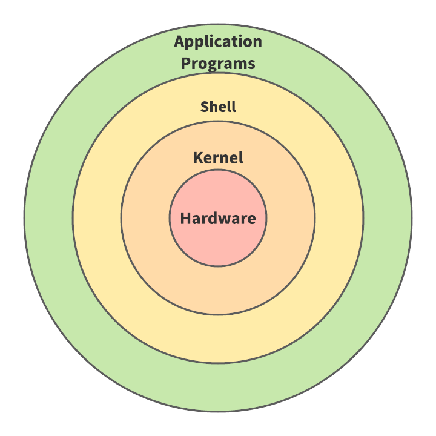
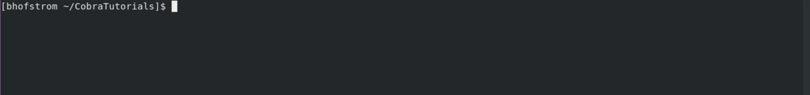

Overview Of UNIX
One of the most important steps a web developer takes in producing their website is pushing their html, css, and javascript files to a web server. Web servers can organize and structure information in varying ways and, in our case, we will be exploring how a UNIX based web server operates. Here, we will explore the basics of UNIX as we lay a strong foundation for our various UNIX Tutorials to come.
What Is UNIX?
UNIX is a computer operating system (OS). The term operating system refers to some form of system software that literally gives a computer its functionality. In our case, this system software refers to the functionality provided to a web server. Operating systems like UNIX combine a suite of programs with slick, graphical user interfaces, or GUIs, that provide users with an easily accessible learning environment as they discover all the cool things their computers can do.

UNIX Makeup And Specifics
To further understand the specifics of the UNIX environment, we can divide it into three distinct categories: the kernel, the shell, and the programs. The diagram below can be used to visualize how these three parts utilize each other to make up the UNIX environment.
The Kernel
The kernel is at the core of the UNIX OS. The kernel provides many of the key components vital to the operating system, accomplishing this by interacting with a computer's, and or server’s, hardware. The main kernel tasks include but are not limited to: process, device, network, and memory management. In essence, the kernel coordinates how to divide system resources amongst all of a user’s processes.
The Shell
The shell acts as a command line interface (CLI) between the kernel and user. It directly interprets user requests in a way that the kernel can then understand, thus initiating the call and startup of your chosen program. The shell is where users typically spend most of their time while using UNIX and is where the most user freedom is granted. Below is an example of a UNIX shell and is where all our commands will be interpreted:
The Programs
While the shell does allow a tremendous amount of creative freedom, none of this can be granted without the proper use of commands and utilities. UNIX employs a multitude of case sensitive commands that allow a user to accomplish a variety of tasks. The programs in this case are the UNIX commands, written and executed from the shell designed to perform some task. We will spend the majority of our time looking at the syntax and functionality behind some of these commands as we get into the various tutorials!